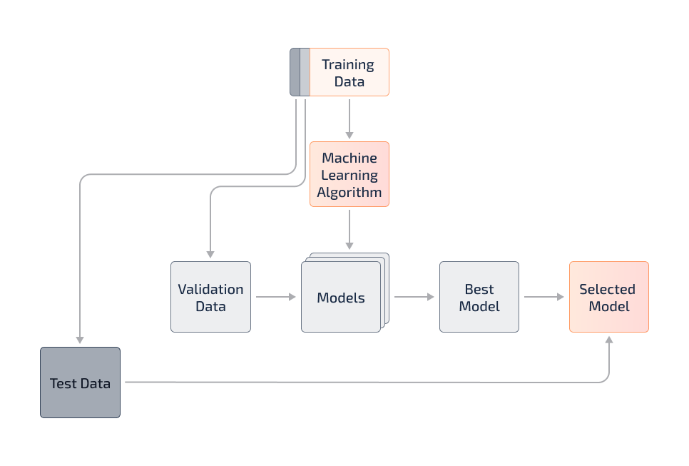
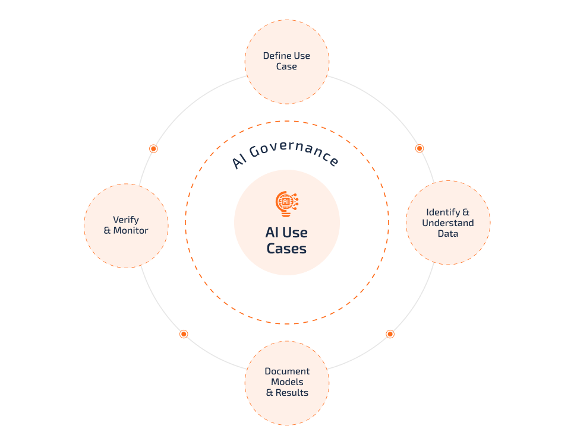

AI models can be tricky to handle and it’s important to make sure that your AI models produce accurate and safe responses to your users’ queries. If this is a priority to you then our AI model auditing services is exactly what you need to optimize your AI models. Our aim is to help businesses like you enhance the transparency, accountability and reliability of your AI models so that you can foster trust with all of your stakeholders. We can help your business with end to end auditing services for your AI models which includes risk mitigation, regulatory compliance and performance optimization. Our expert team of AI auditing services identifies potential vulnerabilities and biases in your AI systems and helps you reduce the risk of errors or unethical responses. With our deep experience in the industry we also help you comply with global data protection regulations and standards like GDPR, CCPA and HIPAA. Get in touch with our expert today to enhance your AI models with our AI model auditing services.
Full-Cycle AI Model Auditing Services For Modern Businesses
We provide you with end to end AI auditing services for your models and follow a comprehensive audit process. We start off with the data quality assessment where we evaluate the accuracy, completeness and relevance of the data you have used for training your AI models. The next step in AI auditing services involves the process called algorithmic evaluation which is where we analyze your underlying algorithms for robustness, fairness and potential biases. Then we move on to performance testing where we measure your model’s accuracy, reliability and scalability under various different conditions. AI model auditing services also cover security analysis for your AI models where we try to identify any vulnerabilities that someone could exploit which ensures that your AI model is resilient against different kinds of attacks. At the end of our engagement with you we provide you with a detailed audit report, certification of compliance and a continuous monitoring plan for your AI system.
End-to-End AI Auditing Services
The scope of our services as an AI auditing company are full cycle and our team can help you with everything from pre and post deployment audits to implementing methodologies to cover all the bases. With our AI model auditing services we help you assess your AI models before you integrate them into operational environments ensuring that they are ready and compliant. We also help you evaluate the models you already have in use and identify any emerging issues or deviations they may have from the performance you expect from them. Next comes the bias and fairness analysis where we conduct specialized audits where our major focus is on detecting and mitigating biases to promote desirable outcomes. We also implement several methodologies for our AI model auditing services which includes concepts like Explainable AI or XAI which utilize methods that make AI decision making processes more transparent and understandable. We also use the Ethical Matrix Framework where we apply structured approaches to assess the ethical implications of your AI systems.
Reliable AI Model Auditing Company Enhancing Intelligent Products
Our expertise in Ai model auditing stems from our extensive experience building scalable solutions using artificial intelligence technologies. We have a very solid and experienced team working with us which comprises multidisciplinary professionals which include data scientists, ethicists and industry AI experts. Our end to end AI model auditing services also come with a proven track record as industry leading providers of AI services helping businesses build AI solutions that not only align with the needs of their business but also comply with global regulatory standards. We use the latest and the most cutting edge tools and methodologies to provide you with thorough and AI audit services. We also take a holistic approach to AI model auditing and will work closely with you from the initial consultation stage all the way to implementation and reporting with the support of our amazing team of specialists.
Full-Scale AI Model Validation Services For Superior Solutions
As part of our AI model auditing services we provide you with AI model validation services which helps you ensure accuracy, generalization capability and regulatory compliance of your AI models. In terms of the accuracy we make sure that your AI models generate correct and reliable outputs. Generalization is all about assessing if your AI models perform well on data that is unseen which would indicate that they are robust. Regulatory compliance in AI audit services is also a major part of launching a successful AI model and we help you verify that yout models adhere to the industry specific regulations and standard that you may have to comply with. For our AI model auditing services we use various validation techniques to offer these services for you and the first of which is the cross validation. Here we partition data so that we can test your model’s performance across different subsets which reduces overfitting. Then there is the backtesting where we apply your AI model to historical data which allows us to evaluate its predictive capabilities. Sensitivity analysis is the next technique where we determine how variations in your model’s inputs affect the outputs which could help us find potential weaknesses.

Exceptional Machine Learning Model Auditing Services
Our end-to-end AI model auditing services also cover machine learning model auditing, and our major areas of focus here are data integrity, algorithmic transparency, and the fairness of outcomes. It is essential that you ensure that the data you have used to train your ML models is accurate, complete, and representative. Algorithmic transparency is all about auditing machine learning models that are understandable to key stakeholders. We also make sure that the responses your machine learning model produces do not unfairly favor any group, which could lead to issues. With our AI model auditing services, one of the common challenges for machine learning models that we encounter is data bias. This is usually due to historical biases in data, which could lead to model outcomes that are skewed. Model drift is another challenge, which is the phenomenon of your AI model's deviation in performance over time when data patterns evolve. Another common challenge is the complexity in interpretation, which is the difficulty in understanding and explaining the complex behaviors of ML models.
Experienced AI Auditing Company For Optimized Solutions
As a leading provider of AI model auditing services we take a holistic approach which combines technical assessments with ethical evaluations to provide you with comprehensive audits. Our services are certainly client centric and we tailor them to meet the specific needs and challenges of your business. We have a strong commitment to excellence towards our clients and we are dedicated to providing you with high quality audits that enhance the trustworthiness of your AI systems. We tailor custom audit frameworks to your industry whether you’re in finance, healthcare, legal, retail and so on. Our expert team collaborates with your AI development teams to implement risk mitigation strategies. We also use industry leading methodologies in our AI model auditing services to ensure that your AI model aligns with ISO 42001 AI Standards, NIST AI Risk Management framework and GDPR guidelines. We provide these services with a very capable team of AI model security audit experts, data scientists and compliance specialists which ensures that your audit is in depth.
Extensive AI Model Security Audit
Our AI model security audit services focus on the key risks your AI models may have and help you mitigate these issues to ensure that your users get meaningful experiences. We detect security risks like adversarial attacks, model inversion threats and data poisoning which can be very tough to deal with. As part of our AI model auditing services also help you protect your sensitive data where we ensure that your AI models do not expose confidential or personally identifiable information. Our team also helps you prevent any unauthorized access to your AI model and implement security protocols to restrict unauthorized manipulation of your AI model or access. For this we use various techniques for auditing like adversarial testing where we simulate attacks to assess how well your AI model withstands these security threats. We also conduct an access control assessment where we evaluate who has access to your AI models and ensure that role based security measures are in place with our AI model auditing services.
Compliant AI Model Governance For Enhancing Your Applications

The governance of your AI models are very important because of a few reasons like accountability, transparency, explainability and to follow ethical AI principles. We use accountability frameworks where we help you establish policies to define AI responsibility within your organization. We also make sure that your AI decisions can be interpreted and justified to regulators or your key stakeholders. It is also very important to implement best practices when dealing with AI models to prevent things like harm, discrimination or unethical decision making. This is important because when AI models are trained on biased data they tend to amplify them and generate very biased responses. Through our AI model auditing services we help you set up governance mechanisms for your AI models. The first thing here is the model documentation where we help you maintain clear records of your AI model’s training data, algorithms and decision processes. We also help you implement systems that allow your human agents to intervene when your AI models make critical decisions.
AI Model Compliance Auditing
Compliance is a huge part of building and using AI models and you have to ensure that your AI model aligns with global regulatory standards. We help you ensure that your AI models comply with industry standards like General Data Protection Regulation or GDPR which helps you align your operation with European data protection laws. With our AI model auditing services we also help you comply with ISO/IEC 42001 which is a specific ISO standard for risk management and governance. We also help you implement the best practices for AI recommended by the US Institute of Standards and Technology using their NIST AI Risk Management Framework. We also have a very structured checklist for our audits which contains things like data privacy assessment where we verify whether your AI model complies with data handling and user consent regulations. Then there is the bias and fairness evaluation where we ensure that the responses your AI generates do not discriminate against protected groups. As part of our AI model auditing services we also ensure that your AI models are ready for external audits and compliance checks.
Why Choose Our AI Model Audit Services For Your Business?


Ensure High Quality Outputs With Our AI Model Auditing Services
Our AI model auditing services are aimed at businesses of all sizes building AI models for tackling various industry problems. We provide you with end to end services for AI model auditing that cover everything from consultation and security checks to making sure that your AI models comply with global regulatory standards and industry best practices. As an AI/ML security audit company, we do this with a high quality team of industry experts in AI technologies, software development, cybersecurity and AI model security that can help you create amazing experiences for your users. With a proven track record of nearly a decade in software development and AI model auditing services expertise we can be your long term AI/ML security audit partner to help you transform your business into a powerhouse. Start your journey with a discovery call with one of our experts.
Frequently Asked Questions
AI model auditing is the process of assessing your AI models for security, fairness, ethical considerations and performance.
AI model auditing ensures that your users experience is fair, unbiased and secure while ensuring that your AI model’s responses are meaningful.
Some common challenges in AI model auditing are data bias, model drift and complexity in interpretation.
The cost for auditing your AI model will depend on what kind of AI model you have. You can get a tailored quote for your specific model by speaking to one of our experts.
The timeline for AI model auditing also depends on the scale and type of your AI model and it is always better to get a tailored quote from one of our experts.